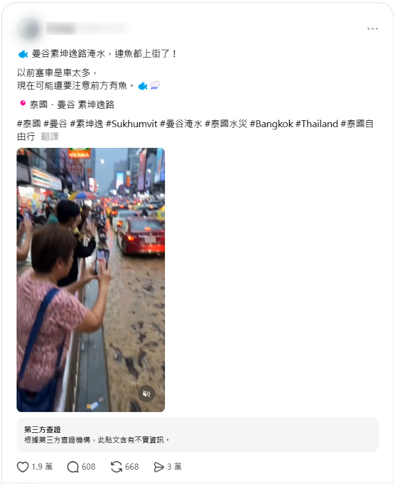
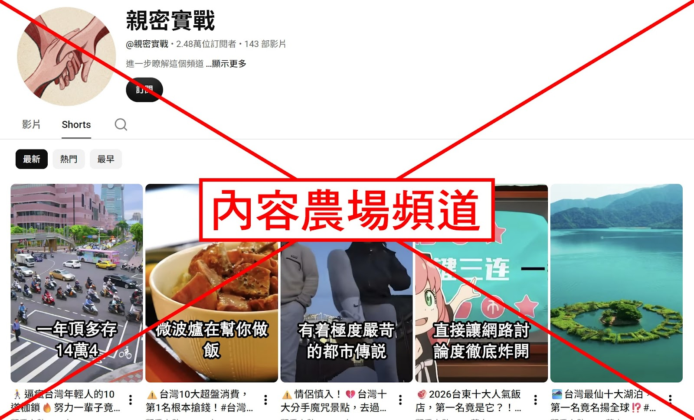
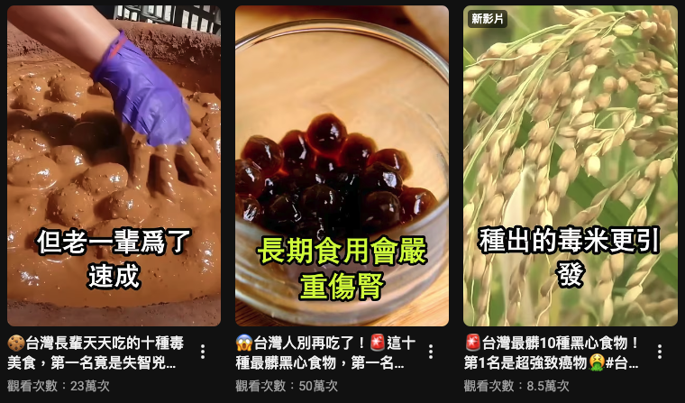
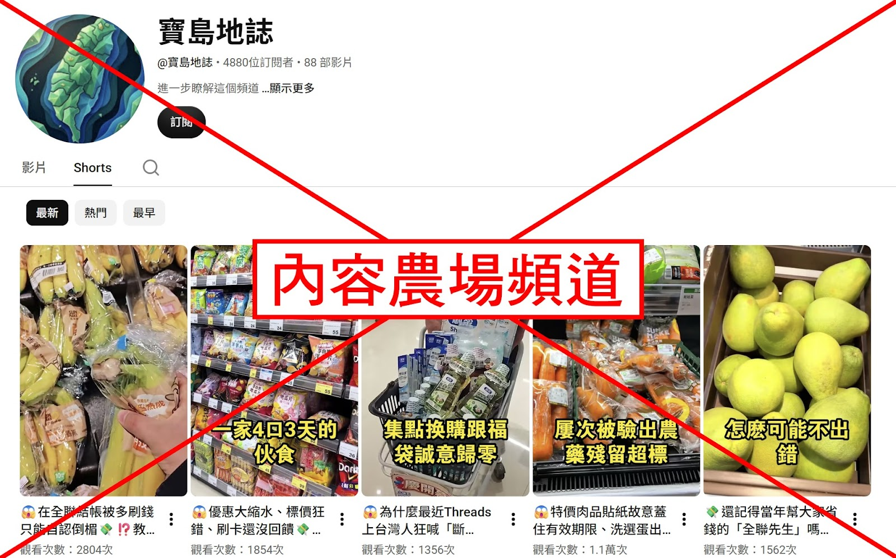
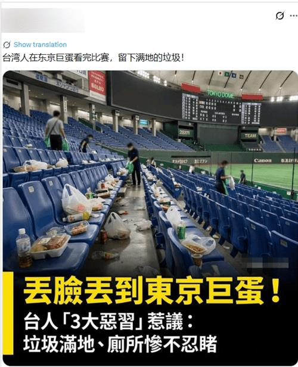
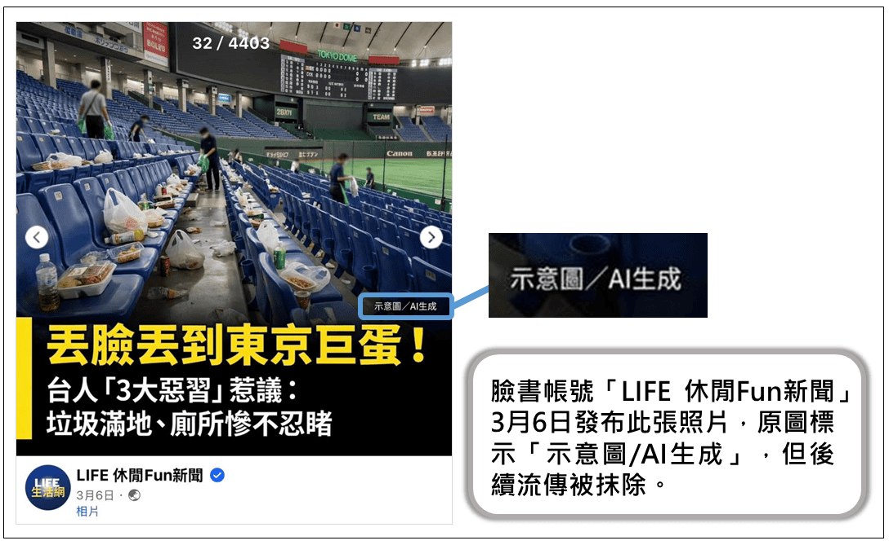
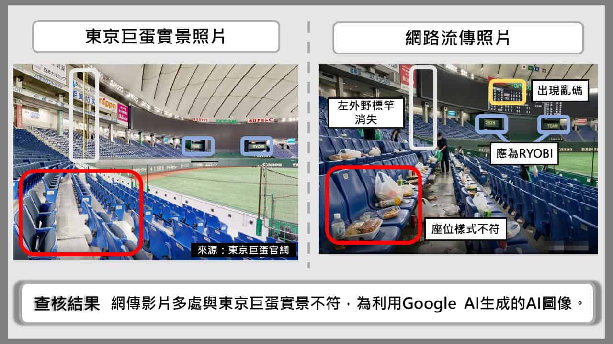
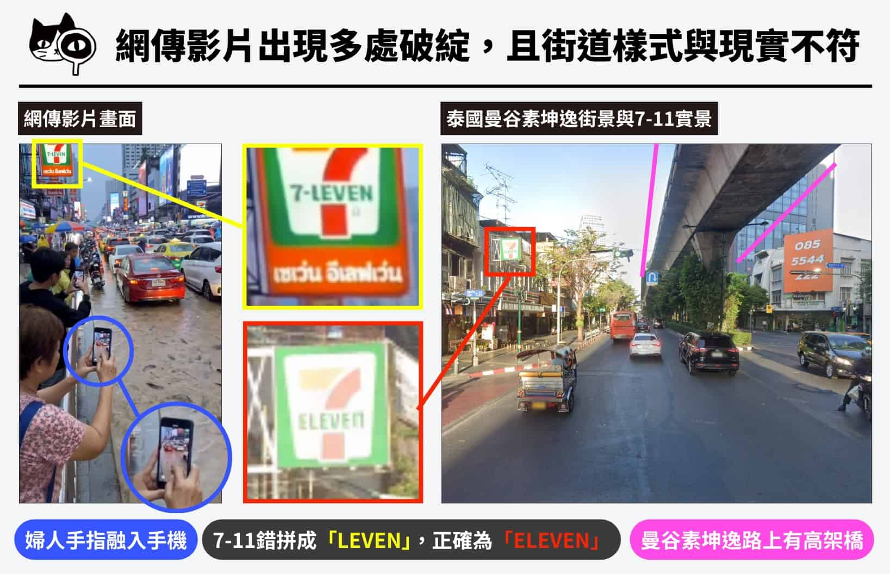
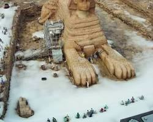

🕵️ 照片影片也要查出身
五年級上學期 · L04 認識農場文與 AI 假資訊影片 · 教學活動流程（40 分鐘）
🔗 已連線：老師公布答案時，這台會自動同步
🎬 先看影片：有圖有真相？
影片：eliteracy 中小學數位素養教育資源網（YouTube）
① 先看一支短影片
「曼谷素坤逸路淹水，連魚都上街了！」2026 年 9 月底泰國大雨，這支影片在 Threads 被看了 188 萬次、分享 3 萬次。

原始貼文擷圖（Threads，帳號已遮蔽）・點圖可放大
🤔 看完你相信嗎？如果想知道它是不是真的，你會從哪裡開始查？
② 認識農場文與 AI 假資訊影片
網路上很多「看起來像新聞」的文章和影片，其實不是記者寫的，也不是為了告訴你真相。先認識兩種最常見的：
🚜 什麼是農場文（內容農場）？
就像農場大量種菜一樣，有些網站和頻道大量生產「吸引你點進去」的文章或影片。它們的目的是衝點閱、賺廣告錢，內容是真是假、是新是舊，它們不在乎。
常見特徵
- 標題誇張嚇人：「十大」「震驚」「第一名竟是」
- 沒有作者，或查不到是誰
- 東拼西湊，把舊新聞當成新的講
〔例〕「台灣十大跌下神壇名店」
頻道「親密實戰」2026 年 5 月才開，已經發了 143 部影片，從都市傳說、湖泊到美食什麼都講，標題幾乎都叫「十大」。這支把 2011～2025 年的食安舊聞包裝成最新消息。


圖片來源：MyGoPen 查核報告・點圖可放大
🤖 什麼是 AI 假資訊影片？
用 AI 寫稿、AI 配音，甚至用 AI 做出畫面，做成像紀錄片或新聞的影片。做一支的成本很低，一個頻道一天可以發好幾支。它比農場文更難分辨，因為有聲音、有畫面，看起來特別像真的。
常見特徵
- AI 配音，語氣很肯定、一直說「驚爆」「真相」「別再…」
- 說「營養師表示」「專家指出」，卻沒有名字，查不到是誰
- 頻道剛開沒多久，影片卻一部接一部，畫面來源不明
- 畫面不合常理
〔例一〕「全支付驚爆 39 人慘遭盜刷 340 萬！」
網傳：臉書轉貼的 YouTube 短片

發片的頻道「寶島地誌」
- 頻道 2026 年 5 月才開，已經發了 88 部影片，全部是來源不明的畫面＋AI 配音＋聳動標題。
- 講的盜刷其實是 2025 年 11 月的舊事件：詐騙集團做假網站騙人輸入驗證碼，不是全支付外洩資料。
- 「綁銀行帳戶危險百倍」是誇大的說法。MyGoPen 判定【誤導】。
圖片來源：MyGoPen 查核報告
〔例二〕「牙膏都是牛骨頭做的」
網傳：臉書流傳的原始影片
- AI 做的「工廠揭秘」：整車牛骨倒進工廠、明火烤牛骨，不合常理。
- 臉書已標上「不實資訊」；TikTok 版本也被平台標「包含 AI 生成媒體」。
- 查核中心判定錯誤：現代牙膏的研磨劑大多不是動物來源。
🪪 還記得 L03 的 5W 嗎？
農場文和 AI 假資訊影片最愛藏起來的，就是這三個 W：
Who 誰做的？
剛開的頻道、沒有真名
When 什麼時候？
舊新聞、舊照片當成新的講
Why 為什麼做？
衝點閱、賺廣告錢
💡 而且就像 L01 學的：信了它，可能會恐慌、亂改設定，還轉傳給家人，變成幫兇。畫面再真，也要查出它從哪裡來。
③ 查指紋Ⅰ：照片從哪裡來？
照片和人一樣有「指紋」：同一張照片在網路上出現過的地方，Google 都找得到。找到最早出現的那一次，就知道它原本是什麼時候、在哪裡拍的。
眼見不為憑的三種型
🕰️ 舊圖新用
舊照片當成新事件。
✂️ 移花接木
裁掉時間、地點，接到別的事件上。
🤖 AI 生成
根本不存在的畫面。
🔎 怎麼做：Chrome 內建的 Google 智慧鏡頭
不用登入。
👩🏫 老師示範：「熊本 7.1 強震撼九州！交通一度停擺」
熊本地震（2026/7/28）是真的。
🤔 那這張照片，也是這次地震拍的嗎？
看老師對照片按右鍵 → 智慧鏡頭，找最早出現的那一筆。
④ 查證網站：有人查過了嗎？
台灣有專門幫大家查證網路傳言的網站。看到可疑的東西，先看看有沒有人查過，就不用從零開始。
三種找法（用哪一種都可以）
以圖搜圖
結果裡常常直接出現查核報告。
關鍵字搜尋
用 L03 的方法抓關鍵字，再加「查核」去 Google 搜。
直接上查核網站
打開上面兩個網站，在搜尋框打關鍵字。
✋ 換你查：找到查核報告
「台灣球迷在東京巨蛋看完比賽，留下滿地垃圾！」這張圖在 X、臉書、Threads 被轉傳。用哪一種方法查都可以，找到查核報告後回答：

0. 你怎麼查到的？（可以選好幾個）
1. 這張圖是？
3. 查核中心給的查核結果是？
🔒 答案等老師公布
🎉 公布：東京巨蛋圖是 AI 生成的

最早發這張圖的媒體，本來有標「示意圖／AI生成」，轉傳的人把標示抹掉，就被當成真的照片。查核結果：錯誤。

和東京巨蛋實景比對：座椅樣式不同、左外野標竿不見、看板文字變亂碼。
🤖 AI 畫面的標示
- 👀 看得到的標示：媒體寫的「示意圖／AI生成」、TikTok 的「包含 AI 生成媒體」（②的牙膏影片）、Gemini 圖片角落的 ✦ 浮水印。
- ✂️ 標示會被抹掉、被裁掉，轉傳幾手之後就看不到了。
- ❗ 所以：沒看到標示，不代表是真的。
圖片來源：台灣事實查核中心查核報告
⑤ 進階：影片截圖＋關鍵字
影片沒辦法按右鍵用智慧鏡頭，嵌在網頁裡的影片更不行。偵探的做法是：暫停在有特徵的畫面（建築、招牌、制服）→ 截圖 → 貼到 Google 圖片搜，再加上關鍵字（地點、事件）縮小範圍。
👩🏫 老師示範：「2026年9月8日，印尼6座火山同時爆發！」
影片：社群平台網傳版本（MyGoPen 判定錯誤）
這支影片在臉書、IG 流傳，貼文寫「2026 年 9 月 8 日，印尼同時面臨 6 座火山同時爆發」。
🤔 畫面真的是 9 月 8 日拍的嗎？
看老師暫停在學生奔跑的那一幕、框住，再加上「火山 學生」去搜。
✋ 換你查：開場的「曼谷淹水，魚都上街了」
還記得一開始那支影片嗎？現在用剛學的方法查它：暫停 → 截有特徵的畫面（招牌、街道）→ 加關鍵字，找到查核報告後回答。
1. 這段影片是？
🔒 答案等老師公布
🎉 公布：魚群影片是 AI 生成的

🔍 破綻：7-11 招牌拼成「LEVEN」、婦人的手指融進手機裡。
🗺️ 對不上：真正的素坤逸路上方有高架捷運，影片裡卻是空的天空。
🤖 檢測：AI 偵測工具判定由 Meta AI 生成。查核結果：錯誤。
泰國那幾天真的淹水，但沒有證據顯示路上出現魚群——事件是真的，畫面是假的。
圖片來源：台灣事實查核中心查核報告
⑥ 換你判斷：標題和照片對得上嗎？
判斷下面三張圖的標題和實際圖片內容是否相符。動手查查看圖片的真實由來，再選答案。（選完不公布，老師會看）
圖1「埃及人面獅身像被白雪覆蓋」

圖2「台南女大生撞人後反覆查看車損」
圖3「幽靈船現身，實則罕見現象」
點圖可放大
今天你帶走的能力
照片影片也要查出身。
先看查證網站有沒有人查過，再以圖搜圖；影片就截圖貼到 Google 圖片加關鍵字，找到最早的那一筆。
下一節，我們要把查證過程整理成一份 Google 文件查證報告！
📮 繳交學習單
確定都填好了嗎？按下面按鈕交給老師（可以重交，會覆蓋前一次）。
made by 資訊老師黃博胤